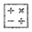

Aide
Ci-dessous est détaillé quelques fonctionnalités de Wanderwerk si celles ci ne devait pas être claire à l'utilisation. J'espère évidement que vous n'en aurez pas besoin. Si quelques choses n'est toujours pas claire, après lecture de cette page, n'hésitez pas à me contacter (voir page d'informations).
Wanderwerk se compose de trois sections :
- La barre d'outils tout en haut, comportant les boutons permettant de gérer vos tracé.
- La carte et ses outils de navigations (déplacement, zoom et la vue générale de la Suisse (la flèche en bas à droite de la carte)).
- La grille d'information qui permet de voir et gérer les données.
Le plus simple pour utiliser cette application et d'utiliser les outils de bas en haut et de gauche à droite, dans l'ordre et selon le besoin.
Généralités
Sans clicker, laissez votre curseur au dessus d'un boutons pour avoir une info-bulle d'aide.
Maintenez un click et bougez la souris pour vous mouvoir sur la carte, ceci marche également lorsque vous dessiner une ligne. Un click unique ne déselectionne pas l'éventuelle tracé en cours, vous pouvez donc naviguer en dessinant.
Vous pouvez changer la vitesse du parcours en changeant le champs "vitesse" dans la section de la grille d'informations. les valeurs à virgule sont autorisées, les valeurs égales ou inférieures à zéro et les lettres sont exclues.
N'hésitez pas à créer plusieurs tracés pour les comparer par la suite.
Aucun outil ne permet actuellement d'imprimer vos tracés mais rien ne vous empèche d'utiliser la fonction "imprimer" de votre navigateur ou de faire une copie d'écran.
Il est possible, pour plus de visibilité, de supprimer des colonnes dans la grille des données. Pour cela, cliquez sur la flèche à gauche de chaque tête de colonne (la flèche apparait lorsque l'on passe le curseur sur la tête de colonne) et désactivez la colonne que vous ne souhaitez plus voir
Dans la section "comparatif des tracés", il est possible de trier les colonnes. Pour cela, cliquez sur une des tête de colonne une ou deux fois pour trier les données respectivement par ordre ascendant ou descendant.
Outils
Sept outils sont actuellement à votre disposition pour tracer votre profil de marche.
Outil de cheminement :
Permet de tracer votre route, plusieurs tracé peuvent actuellement être créé mais ne peuvent pas être supprimé individuellement. Il est possible de "dessiner" librement en maintenant la touche "shift" mais attention, il arrive que la ligne s'interrompe sans raison apparente. Comme il n'est pas encore possible de fusionner des ligne, cette fonction de dessin n'est pas conseillé pour de long tracé.
Outil de modification du cheminement :
Avec cette option, cliquez sur le tracé en cours pour l'éditer. Une fois la ligne sélectionné, cliquez sur les nouveaux points pour bouger les contours du tracé.
Outil d'ajout de points :
Permet d'ajouter des points de passage sur le tracé. Pas besoin de viser la ligne, le point sera automatiquement placé sur le segment le plus proche du tracé sélectionné. Attention, le calcul de l'altitude se fera uniquement sur ces points. Veillez-donc à placer des points après et avant chaque changement important d'altitude.
Outil de modification de points :
Avec cette option, cliquez sur un point pour le sélectionner. Lorsqu'un point est sélectionné, il est possible de le bouger par "drag&drop". Cliquer sur la touche 'Delete' du clavier pour supprimer ce point Si le point n'est pas supprimé, cliquez hors de la carte (sur la zone du haut ou celle du bas mais toujours sur la page de wanderwerk) puis appuyez sur la touche "delete" de votre clavier. Le premier et le dernier points ne sont jamais modifiable.
Calculatrice :
Permet de lancer les calculs qui rempliront les tableaux de données. Vous devrez peut-être attendre quelques instant. Cet outils doit utilisé avant chaqu'un de vos relevés d'informations.
Graphique :
Affiche ou cache le graphique du profil altimétrique.
Corbeille :
Supprime le tracé et chaque point d'intérêt, réinitialise le tableau. Attention, ce choix est définitif.
Champ de sélection des tracés :
Permet de choisir quel tracé peut-être modifié et lequel est affiché dans la grille d'informations. Par défaut le tracé sélectionné est toujours le tracé crée en dernier.
Bouton d'information et d'aide :
Permet d'accéder à ces présentes informations
Problème d'altitude
Wanderwerk se base sur une version gratuite de Geonames pour obtenir l'altitude des points. Cette version gratuite, implique que l'accès à l'altitude n'est pas garantie. Il peut arriver que le service se coupe pour une raison ou pour une autre (problème technique chez Geonames par exemple). Aussi, Geonames limite l'accès à l'altitude par un nombre de crédit. Il est possible d'effectuer 6000 requête par heure et 90000 par semaine maximum. Bien que peu probable, si le quota venait à être dépassé, il faudrait attendre un moment pour avoir a nouveau des crédits. Si l'un de ces problème survient, l'altitude sera de 0. Dans ce cas, la meilleur chosee à faire est d'attendre (ou de faire assez de dons à Wanderwerk pour que j'achète une licence).
Problème d'affichage de la carte
Dans le même principe que l'altitude (voir ci-dessus), les cartes fournies se base sur un service gratuit de Swiss topo. Wanderwerk est limité à l'utilisation de 25G Pixels par année. Une "tuile" (élément de carte) fait 256 pixels de haut et de long donc 65536 pixels. Il est donc possible d'utiliser en moyenne un peu plus de 1000 tuiles par jour. Si la carte ne s'affiche, plus, il s'agit peut être d'un problème temporaire. Si le problème persiste et qu'il s'agit du problème de crédit, il n'y a pour le moment aucun moyen de continuer à utiliser Wanderwerk (sauf, encore une fois, en cas de dons). A terme, il sera possible d'utiliser une autre carte.
Problème d'affichage de l'application
Wanderwerk souffre encore de quelque problème de jeunesse. Si vous avez de la peine à afficher certains éléments, la meilleurs chose à faire est de redimensionner un fenêtre de Wanderwerk ou votre navigateur en entier. Ce faisant, Wanderwerk recalculera la position des éléments et resolvera vos certaiement problèmes. Si néamoins des problèmes venait à persister, ils vienennt probablement de votre version de navigateur. Veillez à faire réguliérement des mises à jours de votre navigateur internet (onglet aide) pour garantir une compatibilité avec les sites web recents.